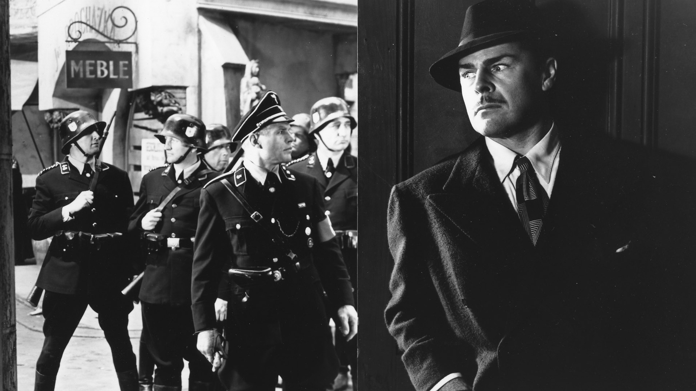

International Lens
Vanderbilt University
Co-Curator

Fritz Lang, Hangmen Also Die! (still), 1943.
International Lens, a film series with a global perspective, provides a forum to promote conversation among Vanderbilt’s diverse students, faculty, staff, and the greater Nashville community. International Lens endeavors to transcend geographic, linguistic, ethnic, religious, and political boundaries by encouraging conversation and greater cross-cultural understanding through cinema.
The series is organized by the Department of Cinema & Media Arts in collaboration with College of Arts and Science, Dean of Students offices, and other departments, centers, and programs across the University.
More information here.